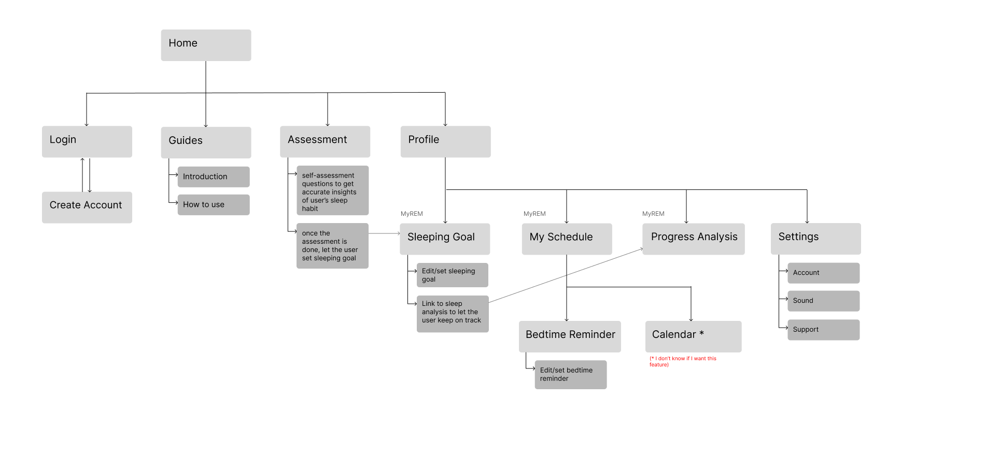
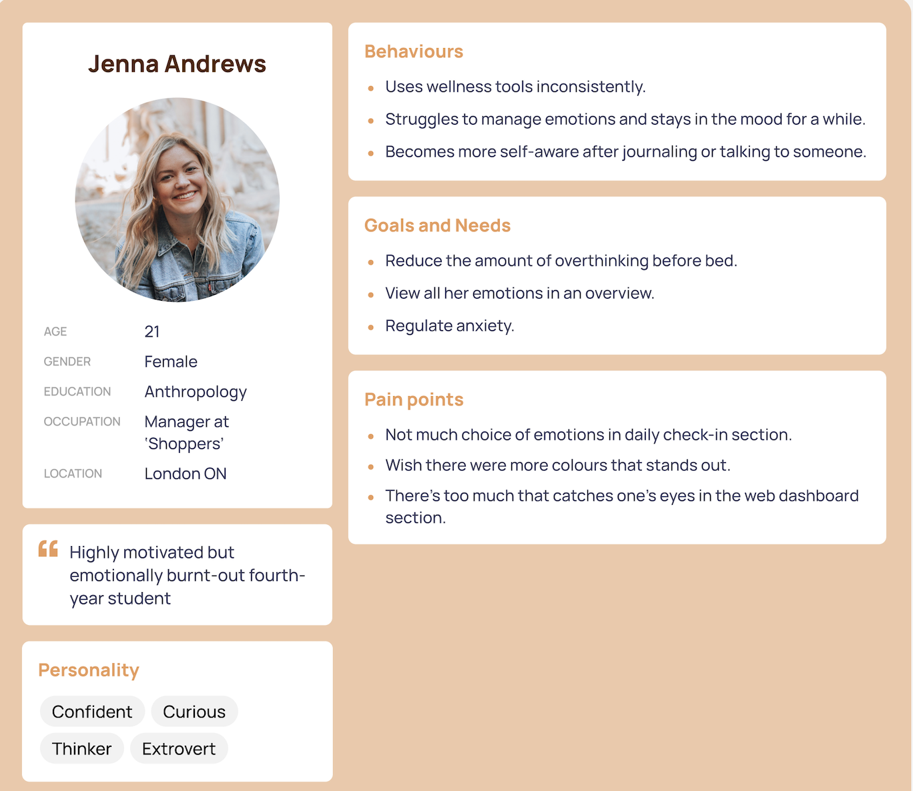
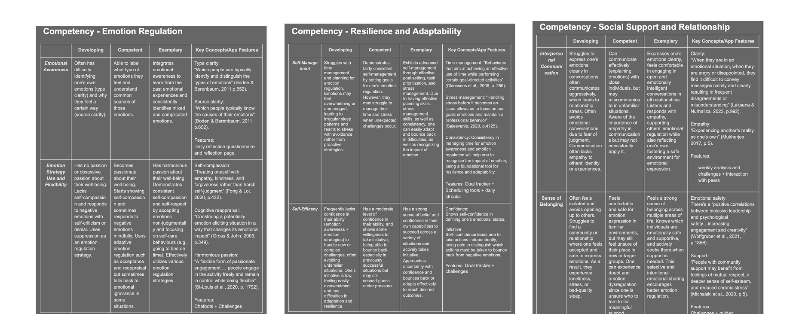
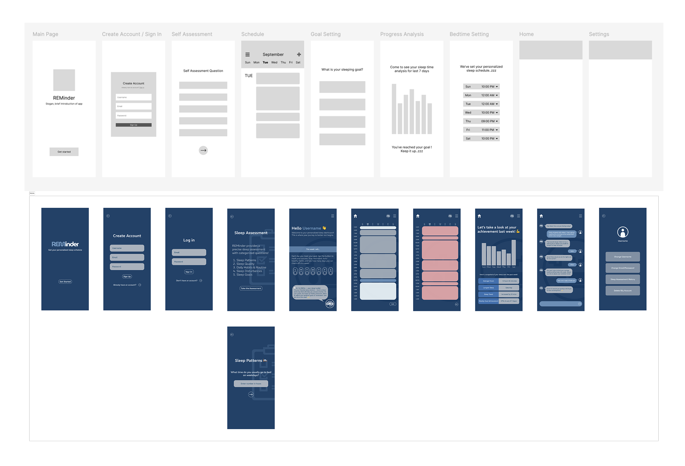
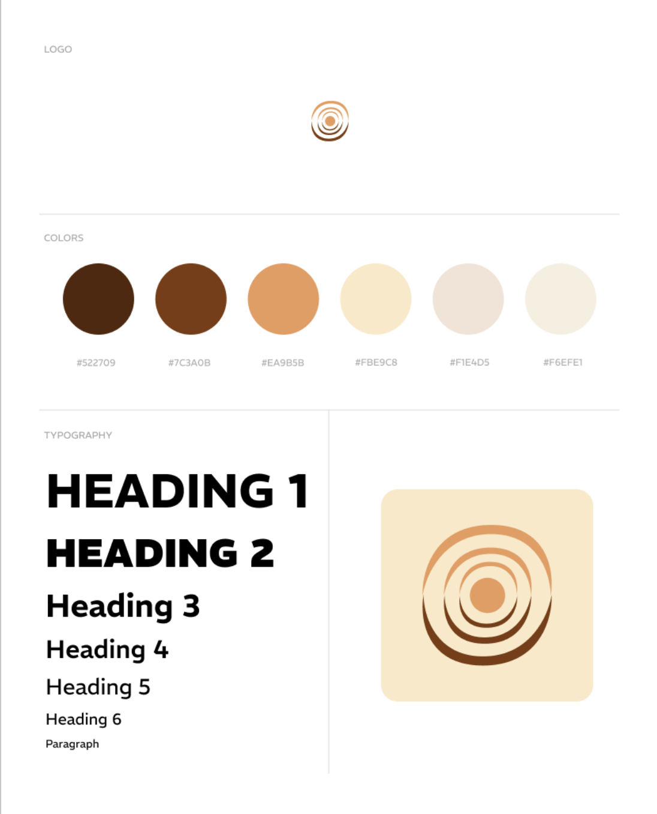
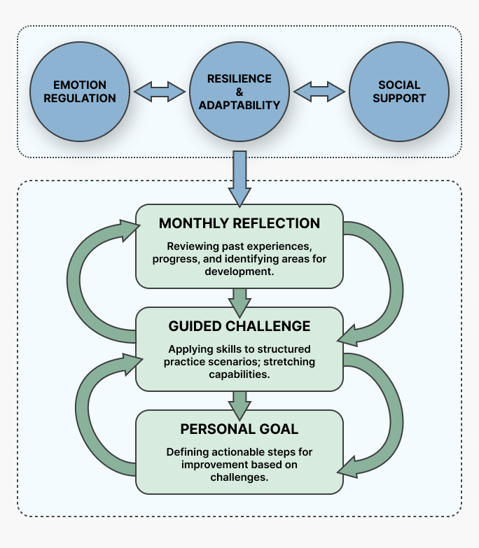
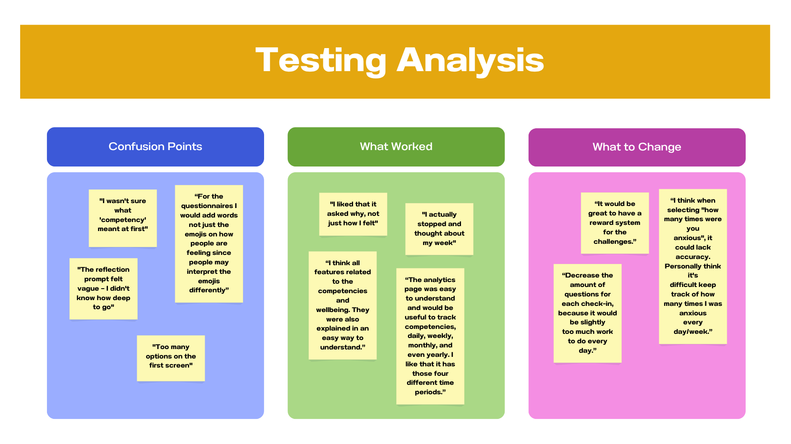

Student Well-being App
During my UX internship, I worked on a student well-being app that goes beyond logging feelings. Through a short self-assessment, students find which of three research-backed competencies they're weakest in (emotion regulation, resilience and adaptability, or social-emotional regulation), then follow a structured path to actually build it. I led UX research and design, working closely with education faculty and senior developers.

- Role: Lead UX Researcher & Designer (Intern)
- Timeline: 17 weeks, Summer Internship 2025
- Team: Education faculty, senior developers, and senior UX designers
- Tools: Figma, usability testing protocol, affinity mapping
- Status: Research and design complete. Backend and chatbot development ongoing; final UI confidential.
to write about their feelings.
They needed a path to actually get better at handling them.
Our literature review pointed to three competencies (emotion regulation, resilience and adaptability, and social-emotional regulation) as the real drivers of student well-being. Logging a feeling doesn't build any of them. Deliberate, guided practice does.
The gap wasn't reflection. It was development.
A competitive scan confirmed that existing apps already let students log and write about their feelings. None of them identified a specific competency a student was weak in and helped them actually improve it.
We didn't start here. Our first instinct was sleep tracking. Sleep is the obvious lever for student well-being, and it felt like a safe, well-supported place to start.

The literature review kept pulling us away from it: sleep only explained part of the picture. Emotion regulation, resilience, and social-emotional skills mattered just as much, and none of them were about sleep at all. Keeping sleep tracking would have meant building the easy answer instead of the right one.


Setting clear goals before the interface
Before designing any screens, I mapped out how competency levels would be tracked, based on the literature review, and which features were essential to evaluate progress.
Wireframe & low-fidelity prototype
A wireframe and low-fidelity prototype let us roughly visualize the reflection flow and catch structural issues while they were still cheap to fix. We later changed the colour scheme and logo to a calmer style.


Keeping 100+ screens consistent
With 100+ screens, small inconsistencies added up fast. I built a style guide from the senior designer's colour palette and icon set so every screen followed the same rules for colour, type, and icons.
Self-assessment first, not open-ended logging
Students start with a short self-assessment across the three competencies, which surfaces the one they're weakest in. From there, guided goals, challenges, and monthly reflection track progress toward mastery. Instead of free-form mood logging, the app gives them a clear starting point and a reason to come back.


Tested with 18 students across pre-surveys, think-aloud sessions, and post-surveys to measure how reflection changed the way they thought about their emotions, not just task completion.
Our first full prototype had a lot going for it on paper: multiple tracking views, detailed progress analytics, and several features running in parallel. Then we tested it with real students, and one comment stopped the whole team:
"This feels like it's lost its purpose. I don't even understand what the app is about."
We went back to the literature review and re-read it against our original goal. Most of what we'd added didn't serve that goal directly, so we cut it. What survived was one self-assessment, one weakest competency, and one clear path forward.
What we changed after user testing
Presented at a research-focused virtual conference. The final high-fidelity UI is confidential while development continues.
"This project changed how I think about UX research. Rather than only asking how users interact with an interface, I got more interested in why they behave the way they do in the first place. That still shapes how I approach product design today."